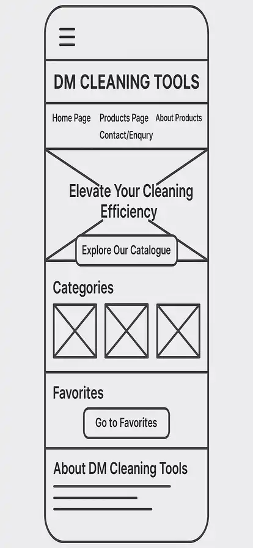
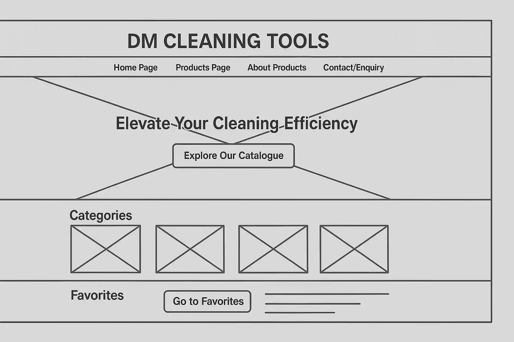

Website Planning Document
Site Name: DM Cleaning Tools
Description: DM Cleaning Tools will serve as an online display catalogue, which offers a variety of cleaning, janitorial, and hygiene products, tools or equipment to meet customers cleaning needs. DM is an acronym for Datametro, which represents our brand name and Trademark.
Site Purpose
The website showcases an online product catalogue for Deep Cleaning Tools. It features:
- A categorized list of Deep Cleaning Tools such as: Scrubbers, Vaccum Cleaners, Pressure Washers, Steams Cleaners, Floor Polishers, Brushes, Mops, etc
- Detailed product pages with specs and images
- A favorites system using localStorage
- A contact/quote request form
- A responsive and visually appealing layout
The goal is to promote Cleaning Tools by increasing its online visibility and improving products accessibilty and interaction.
Scenarios
1. What kind of industrial floor cleaning system is best suited for a large warehouse or distribution center? → Our product catalog features several heavy-duty floor scrubbers and sweepers designed specifically for large, high-traffic industrial environments. The DM-ScrubMax 5000 is one of our most recommended models, offering high-capacity water tanks, dual scrubbing brushes, and autonomous navigation options. On the site, customers can compare models by floor type, size, and cleaning frequency to determine the best fit..
2. How can I request a product demo or get a quote for bulk ordering cleaning tools for multiple factory locations? ? → Visitors can fill out a short Request Quote form on the site to receive pricing and demo options tailored to their business needs. Our sales team will follow up within 24–48 hours to schedule virtual or on-site demonstrations. For bulk or multi-location orders, we offer custom pricing plans and dedicated support.
| Color Schema | ||
|---|---|---|
| Color Name | Hex Code | Usage |
| Deep Blue | #1A237E | Main headers, navigation bar, buttons |
| Light Gray | #F5F5F5 | Background for product sections |
| Accent Orange | #FFA000 | Button hovers, icons, small highlights |
| White | #FFFFFF | Text areas, card backgrounds |
| Typography | |
|---|---|
| Font Name | Usage |
| Montserrat | Used for page and section headings (modern and bold) |
| Open Sans | Used for body text and paragraphs (easy to read) |
| Courier New | Used for product codes/specifications (tech-style font) |
Wireframes (Home Page)
Mobile View (Image)
Desktop View (Image)
